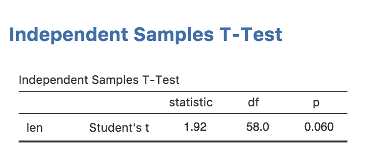
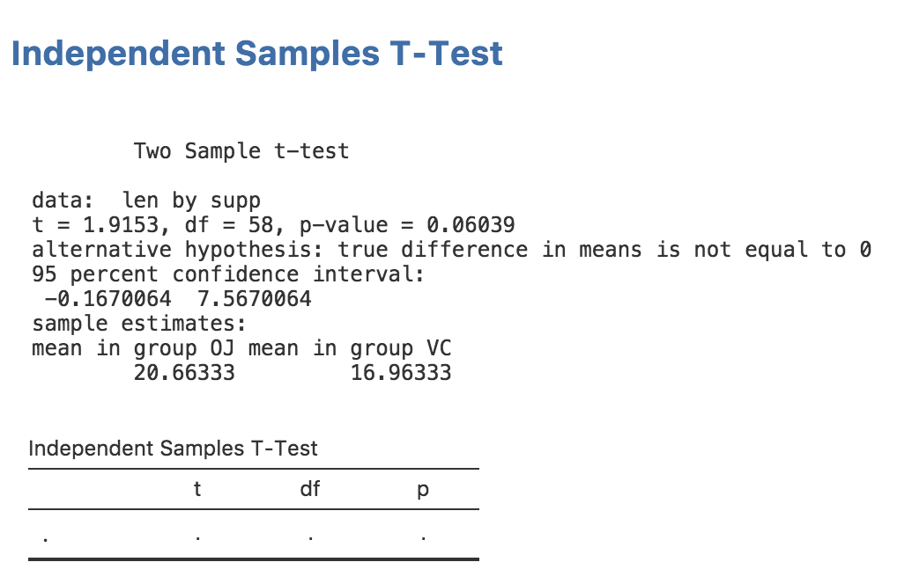
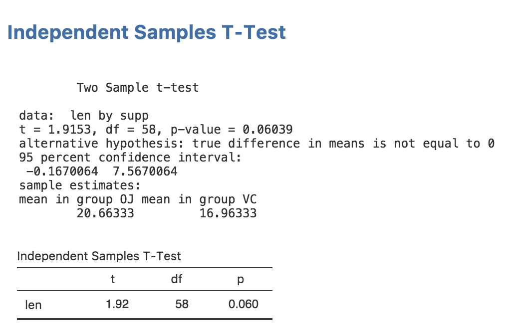
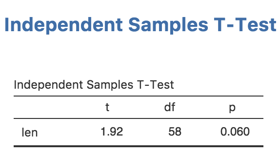

Creating Rich Results
Source:vignettes/dev.jamovi.org-master/tuts0105-creating-rich-results.Rmd
tuts0105-creating-rich-results.RmdIn this section, we will add rich results to our analysis; a nice APA formatted table like this:

Rich results are visually appealing, and make it easier for users of your module to ‘parse’ and understand the results your module produces. A lot of people find statistics challenging, so we might as well make them as accessible and easy to read as possible.
The Results Definition
In order to provide rich results, we need to add some entries into
the results definition. This is the ttest.r.yaml file which
was created earlier in this tutorial series:
---
name: ttest
title: Independent Samples T-Test
jrs: '1.1'
items:
- name: text
title: Independent Samples T-Test
type: PreformattedThis is pretty similar to the ttest.a.yaml file; there’s
a name, a title, and a jamovi results spec (jrs) (note,
this is different to the jas in the .a.yaml
file). items comes next, and it describes all the items
that make up the results. For example, the results could be made up of
two tables and a plot. Each item in the results is listed here.
At present, the results contains a single Preformatted
results item called text with the title
Independent Samples T-Test. If you think back to the previous section, we
accessed a results object with the following:
self$results$textNow you can see where this seemingly arbitrary name text
came from. This is how different results items are accessed.
Adding a Table
Let’s add a table for our t-test results. For the time being, we’ll leave the existing ‘Preformatted’ results item and add the table underneath. This will let us check that the results we populate the table with are correct.
Modify ttest.r.yaml so it reads:
---
name: ttest
title: Independent Samples T-Test
jrs: '1.1'
items:
- name: text
title: Independent Samples T-Test
type: Preformatted
- name: ttest
title: Independent Samples T-Test
type: Table
rows: 1
columns:
- name: var
title: ''
type: text
- name: t
type: number
- name: df
type: integer
- name: p
type: number
format: zto,pvalueWith these modifications, we’ve added a new table called
ttest with the title
Independent Samples T-Test. We’ve also specified that it is
to have 1 row, and that it has four columns; var,
t, df and p. Notice that we’ve
specified an empty string for the title of column var. If a
title isn’t specified the column name is used instead.
The type for each column is specified as either
text, number or integer. The type
affects the way the column is formatted. text columns have
their content left aligned, number and integer
columns have their content right aligned. integer columns
are formatted as whole numbers (no decimal places).
The format field is a string of comma separated values.
It provides additional information on how a column should be formatted.
In the case of the p column, it has two formats applied,
zto and pvalue. zto indicates
that a value ranges between zero and one; this causes it to be rendered
to a fixed number of decimal places. In contrast, values without this
format are formatted to a fixed number of significant figures. This
makes the biggest difference with values close to zero; without
zto the value 0.006 would be rendered 0.00600
(3 significant figures), where as with zto it would be
rendered 0.006 (3 decimal places). With values like
correlation co-efficients and other values which range between zero and
one, the latter is generally preferred.
The other format is pvalue, which indicates that values
in this column are p-values. If any of
these values drop below a threshold (.001 by default), they will be
replaced with < .001.
Now that we’ve set up our table, we can see what it looks like by reinstalling the module:
jmvtools::install()If you return to jamovi now, you’ll see that the installed module has been updated and our earlier analysis has been rerun. The table we added is now visible in the results. This is pretty handy: whenever you reinstall a module, it is updated immediately. Your results should now look as follows:

Populating a Table
Now we’ve created a table, let’s fill it in with the values from the
t-test. For this, we need to extract the actual values from the t-test
object returned by R’s t.test function. Rather awkwardly,
analyses in R don’t return consistent results objects; there’s generally
no predictable way to know how to access the underlying values. Some R
functions return lists, others return S3 objects, others S4. Some
require reading the values with indices ([[x]]), others
require the use of slots (@). It generally requires a bit
of trial and error to figure out how to access the underlying values of
a results object. One useful function for this is the
mode() function. For example, we can call mode on a
t.test results object like so:
## [1] "list"This tells us that the results object from the t.test function is a list (although somewhat in disguise). We can then use the functions we normally use on lists, for example:
## [1] "statistic" "parameter" "p.value" "conf.int" "estimate"
## [6] "null.value" "stderr" "alternative" "method" "data.name"With a little more tinkering we can figure out that
results$statistic contains the t statistic,
results$parameter contains the degrees of freedom, and
results$p.value contains the p value (that last one
probably didn’t require that much tinkering).
We can assign each of these values to the row in our table with the
setRow() function:
table <- self$results$ttest
table$setRow(rowNo=1, values=list(
var=self$options$dep,
t=results$statistic,
df=results$parameter,
p=results$p.value
))Now if we reinstall our module:
jmvtools::install()Our results in jamovi should look something like this:

Now we have everything working, let’s remove the text results:
ttestISClass <- R6Class("ttestISClass",
inherit=ttestISBase,
private=list(
.run=function() {
formula <- constructFormula(self$options$dep, self$options$group)
formula <- as.formula(formula)
results <- t.test(formula, self$data)
table <- self$results$ttest
table$setRow(rowNo=1, values=list(
var=self$options$dep,
t=results$statistic,
df=results$parameter,
p=results$p.value
))
})
)then perform a reinstall with jmvtools::install(). Now
we have a nice, attractive, minimalist t-test.

Let’s also take a look at running this analysis in an R session. We can install the package into R with:
devtools::install() # note here we're using devtools, not jmvtoolsand run the analysis with:
Independent Samples T-Test
Independent Samples T-Test
──────────────────────────────
t df p
──────────────────────────────
len 1.92 55 0.061
────────────────────────────── As can be seen, a nicely formatted table has been generated in R as well. Everything is maintained, right down to the number of decimal places. In this way jamovi can make R packages — even if you have no intention of publishing as jamovi modules — more attractive, easier to read, and more consistent too.
Next: Adding Plots